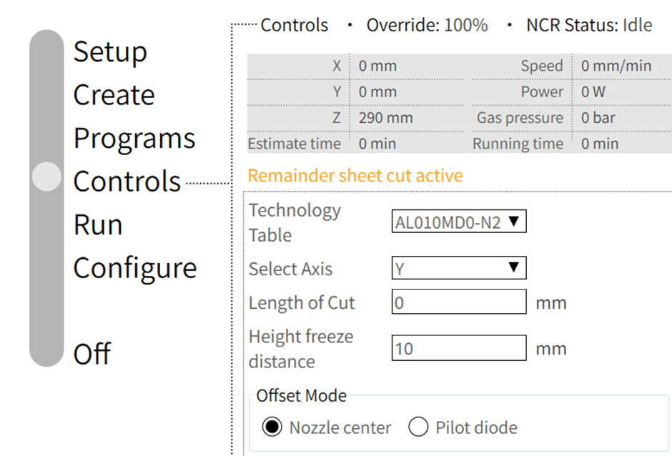
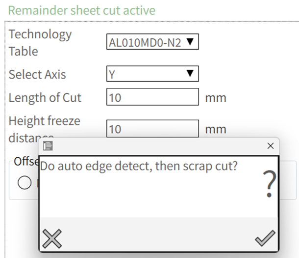
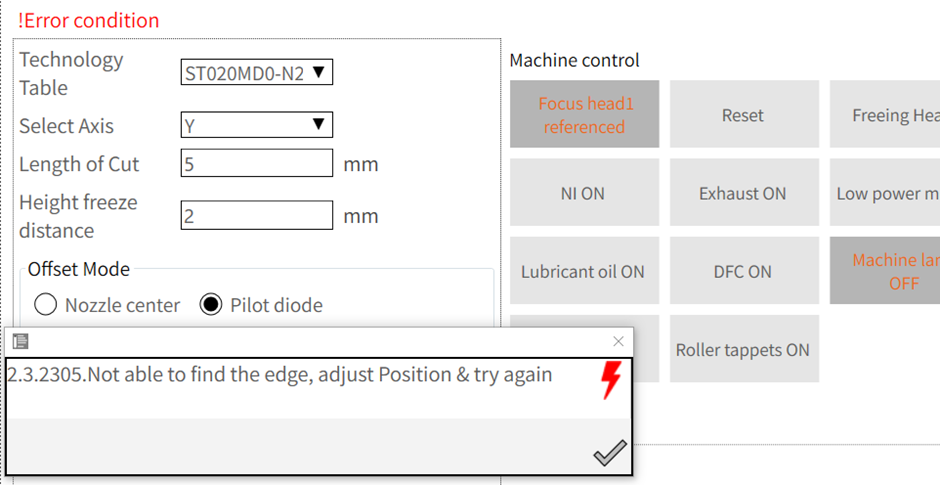

Scrap Cut
Scrap cut function is used to cut the remaining unused area of the sheet manually. This feature is useful to cut remaining material from a thin sheet to have easier handling of a rectangular sheet.
When this program is activated, the user must enter the cutting length along either the X or Y axis. The machine will begin cutting from the current position of the cutting head and proceed up to the specified length along the chosen axis.
Additionally, the user can choose the appropriate technology table and select the desired offset mode for the operation.
The Height Freeze Distance determines when the height control should stop adjusting. A value between 1-10 mm should be set, indicating how far in advance the height control will freeze. It is advisable to set this within the 10 mm range. The operator can modify this value as needed based on the cutting requirements.

Procedure:
-
Use nozzle centre/ pilot diode for capturing work offset (Select corner of the sheet with 5mm tolerance).
-
Run the program.
-
According to the height freeze distance of 10 mm, it will freeze the height control from the work offset. i.e., it will freeze from the distance of 5 mm inside and 5 mm outside in a total of 10mm distance. Once the 10 mm freeze distance is completed, it will beam on from outside 5mm and get inside in a laser flow until the length of cut is configured.
-
Added the option to perform the auto edge detect, to find the exact edge of the sheet and then start the scrap cutting :

-
If selected No, program will continue with the current position.
-
If selected Yes, edge detection will be done from the current position by moving in the opposite direction for 20 mm.
-
If able to find the edge within this distance, then will adjust the current position and start the cutting.
-
If not able to find the edge within this distance, then the program will be aborted with the following message :

-
-
For the customers using oversize sheet (Sheet size Tolerance), there could be Y-limits error in Scrap Cut process. Consider reducing the HC freeze distance to avoid such case.